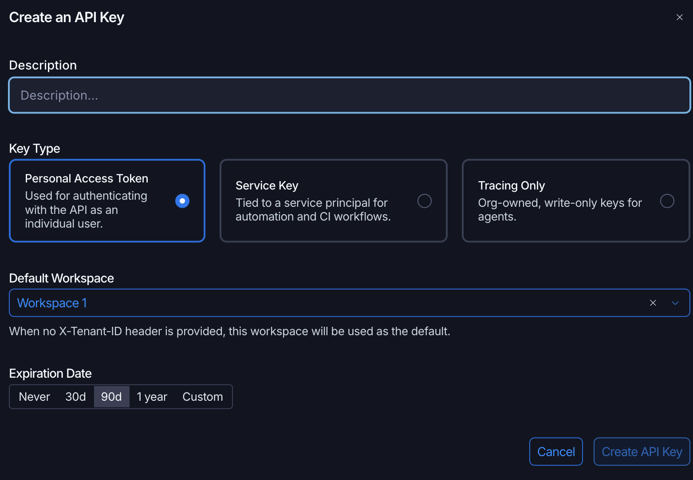

STACK workshop · hands-on labs · home
Local setup: run the labs on your own laptop
At the workshop, everyone gets a ready-made lab desktop in the cloud: follow Before you start on the home page instead. Use this page only if you want to run the labs on your own laptop, for example after the workshop.
Before you start (own laptop)
Do this once, before your first session. It takes about 10 minutes, most of it the first build.
-
Install the tools
Open the box for your laptop. Everyone also needs:
- A web browser and a free LangSmith account, for Studio. Sign in once before the session.
- A Bifrost API key for the workshop’s model gateway. You get a key card with a code at the workshop; step 3 shows how to unlock the key and where to put it.
macOS
- A container engine, either one:
- Docker Desktop. Start it once so it's running.
- Podman Desktop, free. Its first-run setup installs Podman and creates a Podman machine. Then open Settings → Resources, click Setup on the Compose tile and follow the prompts (how).
- make: in Terminal, run
xcode-select --install. If it says the tools are already installed, you have it. - Use the Terminal app for every command in the guides.
Windows 10 or 11
- A container engine, either one. Both set up WSL 2, the Linux layer they run on, if your PC doesn't have it yet.
- Docker Desktop. Start it once so it's running.
- Podman Desktop, free. Its first-run setup installs Podman and creates a Podman machine. Then open Settings → Resources, click Setup on the Compose tile and follow the prompts (how).
- make and Git: open PowerShell and run the two commands below. Then close PowerShell and open a new one, so it finds them.
winget install ezwinports.make winget install Git.Git - Use PowerShell (or Windows Terminal) for every command in the guides. The
makecommands work the same as on a Mac.
Clone the repo with Git rather than downloading a ZIP: the repo tells Git to keep Unix line endings, which the containers need.
Linux
- A container engine, either one:
- Docker Engine with the Compose plugin (
docker compose). Then follow the post-install steps so you can rundockerwithoutsudo, and log out and back in. - Podman 4.7 or newer, plus
podman-compose, so thatpodman composeworks. Or Podman Desktop, then Settings → Resources → Compose → Setup.
- Docker Engine with the Compose plugin (
- make and Git from your package manager, for example on Ubuntu or Debian:
$ sudo apt install make git - Use your usual terminal for every command in the guides. The
makecommands work the same as on a Mac.
Can't install Docker or Podman? Follow Run the labs without containers instead. It replaces steps 1 to 5 here, and Labs 1 to 3 work the same.
-
Get the workshop code
Open a terminal (Terminal on a Mac, PowerShell on Windows, your usual terminal on Linux) in the folder where you keep projects. Clone the repo, then move into it:
$ git clone https://github.com/koayyongzhuang/agentic-workflows-workshop.git $ cd agentic-workflows-workshopThe folder is called
agentic-workflows-workshop. Every command in the guides runs from inside it, so each time you open a new terminal,cdinto it first. Your prompt usually shows the folder name; if not, runpwdto check. -
Create your settings file
In the
agentic-workflows-workshopfolder, copy the example settings file:$ cp .env.example .envOpen
.envin any editor (for exampleopen -e .envon a Mac,notepad .envon Windows,nano .envon Linux) and fill in these two lines. Leave everything else as it is.BIFROST_API_KEY=paste-your-bifrost-key-here LANGSMITH_API_KEY=paste-your-langsmith-key-hereYour Bifrost key (
BIFROST_API_KEY) is for the workshop’s model gateway. At the workshop you get a printed key card with a ten-character code, such asABCDE-23456.- Open stack.asean-lab.com, or scan the QR code on your card.
- Type the code from your card into Card code and click Unlock key. The dash is optional.
- Click Copy key. If your browser blocks copying, the page selects the key for you: press Cmd+C on a Mac or Ctrl+C on Windows and Linux.
- In
.env, paste it straight afterBIFROST_API_KEY=, with no spaces or quotes. The page also shows the finished line under Paste into your lab’s .env file. - Click Hide from screen when you’re done.
Each key has its own budget and is switched off after the workshop. Code doesn’t work, or lost your card? Ask a facilitator.
Your LangSmith key (
LANGSMITH_API_KEY) lets Studio and tracing use your LangSmith account.- Sign in at smith.langchain.com with your personal account, then open Settings → API Keys and create a new API key.
- Fill in the Create an API Key form as in the picture below:
- Description: anything that reminds you what it's for, such as
STACK workshop. - Key Type: Personal Access Token, the default. Not Service Key or Tracing Only.
- Default Workspace: leave it as it is.
- Expiration Date: 30d covers the workshop; 90d is fine too.
- Description: anything that reminds you what it's for, such as
- Click Create API Key and copy the key straight away. It starts with
lsv2_pt_and is shown only once. If you lose it, create another. - In
.env, paste it straight afterLANGSMITH_API_KEY=, with no spaces or quotes.

The LangSmith form, with Personal Access Token selected. Save
.env. Your keys stay in it, on your laptop. Don't paste them into a chat, a screenshot or a commit.No key, or the wifi is down? Change the line to
MODEL=mock. Every graph still runs offline, but the mock model ignores prompts, so Lab 1's prompt exercises need a real model. -
Start the stack and check it
Your terminal must be in the
agentic-workflows-workshopfolder. If your prompt doesn't end in that name,cdinto it from the folder you cloned it in:$ cd agentic-workflows-workshopThen start the stack and check it:
$ make up $ make checkThe first
make upbuilds the containers and takes a few minutes. Every line ofmake checkshould show a green ✓. If "LLM responds" fails, fixMODELor the key in.env, then runmake upagain so the container reloads.env. -
Open Studio
Open a second terminal,
cdintoagentic-workflows-workshopagain, and start Studio:$ make studioLeave this terminal running for the whole session: closing it or pressing Ctrl+C stops Studio. Use your first terminal for other commands.
Then open
https://smith.langchain.com/studio/?baseUrl=http://127.0.0.1:2024in your browser. You should see the graph list, starting withlab_1_single_agent. The labs run here.Your browser may ask permission to let the page connect to your local server — click Allow. If you dismiss or block it by mistake, reloading the tab won't ask again: fully quit the browser (Cmd+Q on Mac, or close every browser window on Windows and Linux), reopen it, and enter the Studio URL again so the prompt reappears. Safari can't connect to the local server, so use another browser.
No Studio? Every step in the guides has a "No Studio? Use the terminal instead" box with the terminal version (
make single,make multi, ormake shellto open the container shell).Doing the optional Labs 3 and 4? Lab 4 runs Hermes Agent inside the workshop container. If you built the containers before Lab 4 was added, run
make up-buildonce to add it.
Session 1 · Single Agent Hands-On · 50 minutes
Session 2 · Multi-Agent Hands-On · 60 minutes
- Pattern 1 Sequential Pipeline Assembly Line 6 min A fixed chain of stages, each writing one field of the state.
- Pattern 2 Routing Concierge 6 min One agent classifies the request and hands it to a single desk.
- Pattern 3 Hierarchical Decomposition Russian Doll 7 min A planner splits a goal; one worker graph runs per sub-task.
- Pattern 4 Parallel Fan-Out / Gather Octopus 7 min Reviewers run at the same time; a synthesizer merges their feedback.
- Pattern 5 Generator & Critic Editor's Desk 6 min Write, check against criteria, revise, with a cap on rounds.
- Lab 2 Citizen Services Platform 25 min A supervisor, three specialists and five guardrails. Approve a booking, then add a fourth agent.
After the workshop · optional · about 40 minutes
The wrap-up introduces the agent harness; these two labs let you try one. The same agency again, now on ready-made harnesses: the loop, memory, files and tools around a model that you wrote yourself in Lab 1. Lab 3 is a harness you build on in code and ship inside your app. Lab 4 is a harness you run as a product and connect your systems to.
- Lab 3 Deep Agent 20 min LangChain's Deep Agents writes a household case file: it plans, delegates each scheme to a sub-agent, asks before booking, and follows your skill.
- Lab 4 Hermes Agent 20 min A ready-made assistant in your browser. Connect the agency's tools, teach it your preferences and a skill, then have it change the workshop code.
Keep these open
- Commands: every
makeandpython -mcommand, Studio graph names, and fixes for common errors. - Patterns sheet: the five patterns on one page, with the names the readings use.
- Glossary: one meaning per word, used in every guide.
- Without containers: the backup setup with uv, if Docker or Podman won't install.
How each guide works
Each guide opens with what you'll be able to do by the end, explains just enough to do it, then gives numbered steps. Before you run something, the guide asks you to predict the result; open the box only after you've guessed. Committing to a guess before you look helps you remember the answer. Tick each step as you finish it; your browser remembers the ticks.
Every guide ends with a three-question quiz, one primary source to read later, and a reminder that you can ask: a facilitator, the person next to you, or your AI assistant.
All schemes, policies and data in the labs are fictional and exist only for teaching.